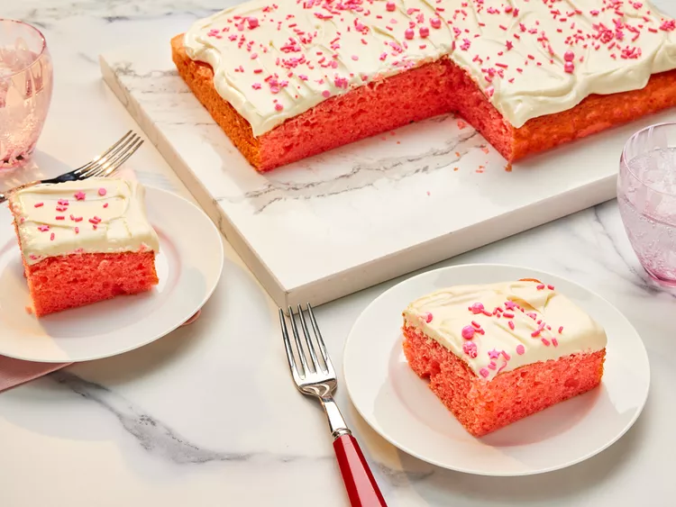

Pink Velvet Cake!

Description
When John Chandler submitted this lasagna recipe to Allrecipes more than 20 years ago, he had no idea how successful it would become. One of our top-performing recipes of all time, World's Best Lasagna racks up more than 7 million views per year and has ranked among the most popular lasagna recipes on the internet for two decades.
Unfortunately, John unexpectedly passed away at 53 years old — read all about his life and legacy here. Make our most popular lasagna today to find out what all the fuss is about!
You will love it!
Ingredients:
Stuff you will need!
- Meat
- Onion and garlic
- Tomato products
- Sugar
- Spices and seasonings
- Lasagna noodles
Steps:
- Beat eggs in a bowl, and stir in baby spinach and Parmesan cheese. Season with onion powder, nutmeg, salt, and pepper.
- Spray a small skillet with cooking spray and place over medium heat. Once warm, add in the egg mixture and cook until partially set, about 3 minutes. Flip with a spatula, and continue cooking, 2 to 3 minutes.
- Reduce heat to low and continue cooking, 2 to 3 minutes, or until omelet reaches desired doneness